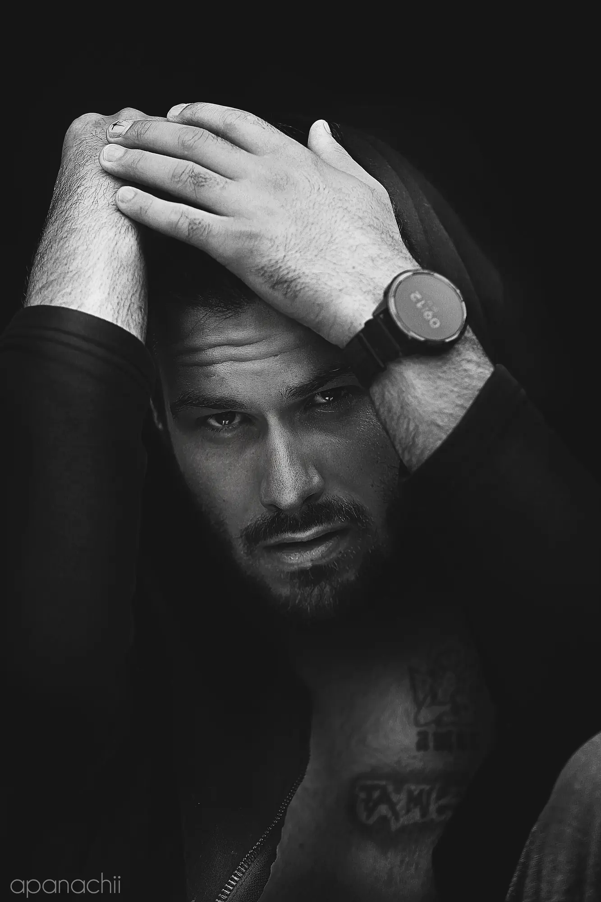
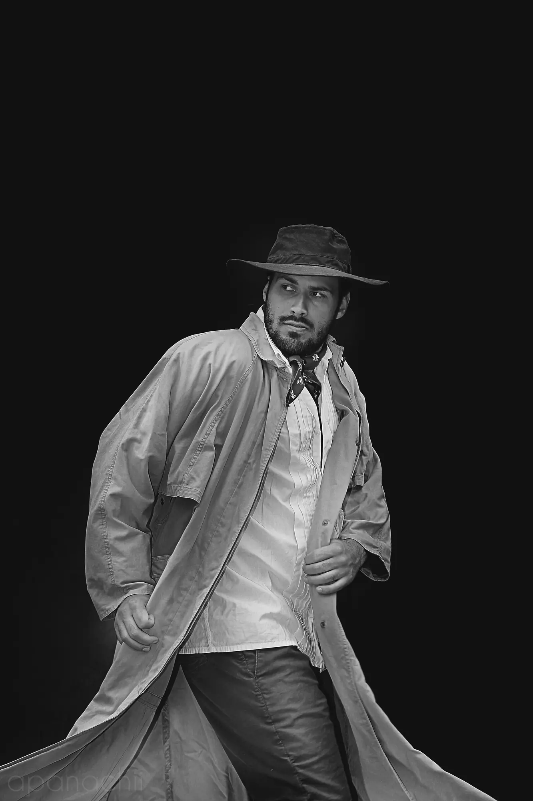
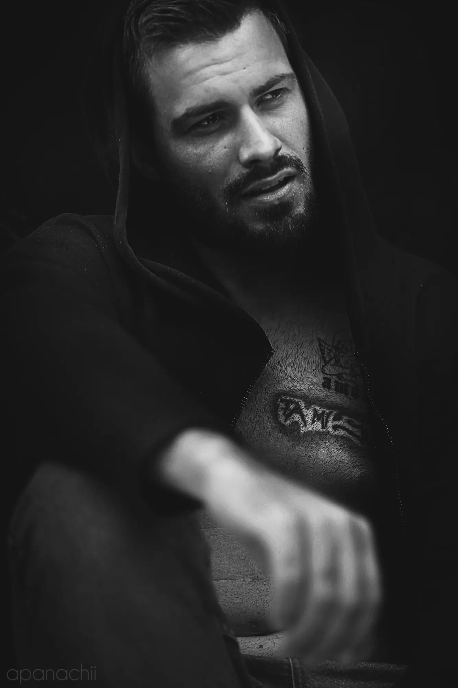
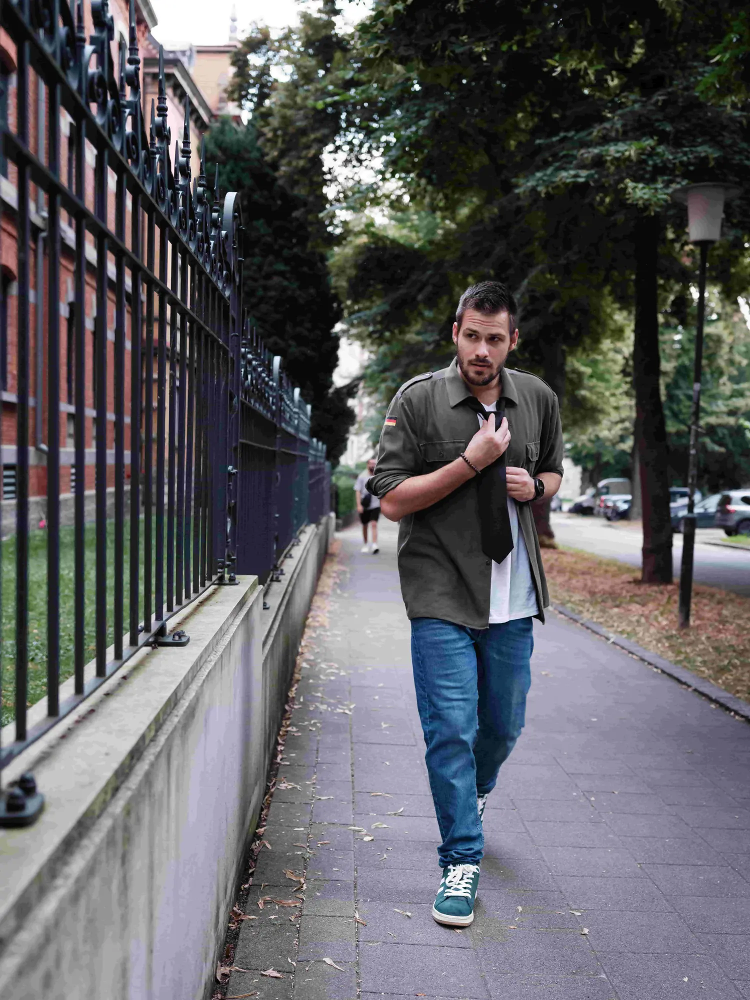
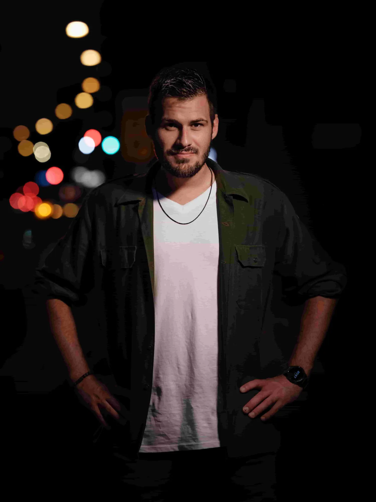
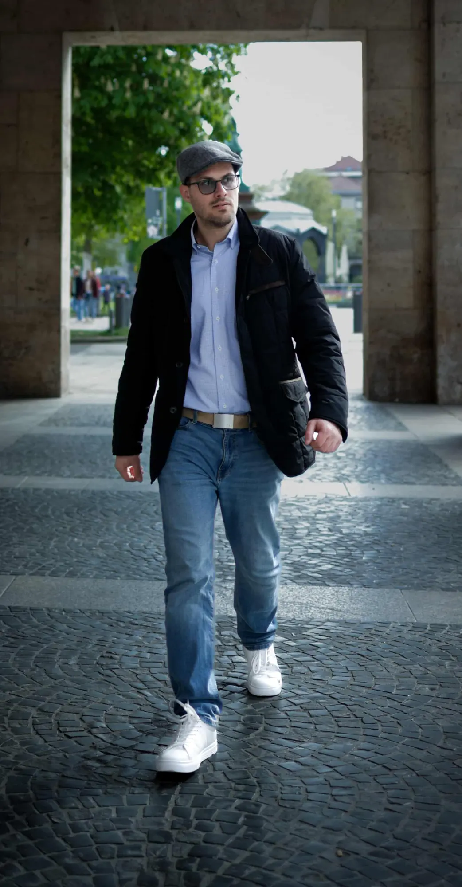
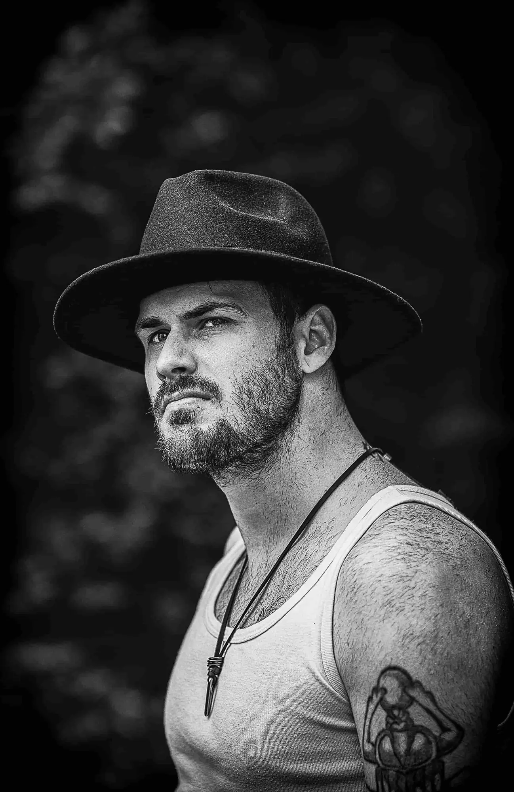
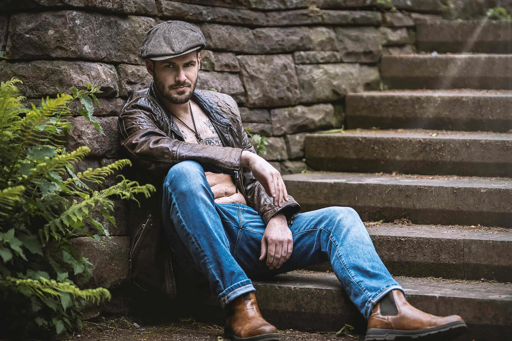

Mausrad = Zoom · Halten = Lupe · ESC = schließen


Frame 02
Frame 04
Frame 05
Frame 08
Frame 12
Frame 13/14
Frame 15/16Shootings, Editorials, Agenturanfragen oder Castings — Maße, Polaroids und Sedcard findest du auf einen Blick, eine Rückmeldung meist innerhalb von 24 Stunden.